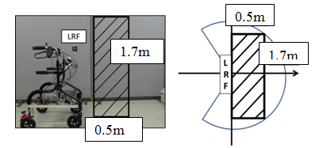
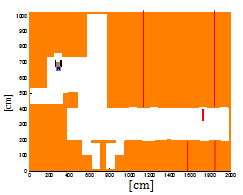
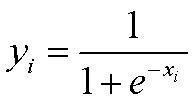
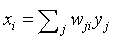
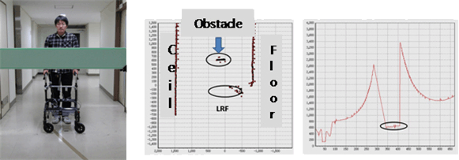
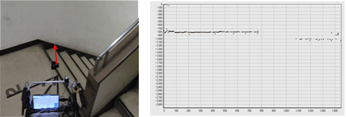

International Journal of Mechanical Engineering and Mechatronics (IJMEM)
ISSN: 1929-2724

Volume 1, Issue 2 - Year 2012 - Pages 9-14
DOI: 10.11159/ijmem.2012.002
Assisting and Guiding Visually Impaired in Indoor Environments
Genci Capi
University of Toyama
Gofuku 3910, Toyama, Japan
capi@eng.u-toyama.ac.jp
Abstract - This paper presents a new intelligent robotic system to assist or guide visually impaired people. The robotic system, which is equipped with a visual sensor, laser range finders, speaker, gives visually impaired people information about the environment around them. The laser data are analyzed using the clustering technique, making it possible to detect obstacles, steps and stairs. The PC analysis the sensors data and send information to the visually impaired people by natural language or beep signal. In the guide mode, the robot navigates controlled by evolved neural networks. By selecting the target location, the robot starts guiding the user toward the goal. The robot switches between neural controllers based on the robot location as it navigates in the environment. The usefulness of the proposed system is examined experimentally.
Keywords: Visually Impaired People, Guide Robot, Assistive Robot, Indoor Environments.
© Copyright 2015 Authors - This is an Open Access article published under the Creative Commons Attribution License terms. Unrestricted use, distribution, and reproduction in any medium are permitted, provided the original work is properly cited.
1. Introduction
Although many improvements have been done in public roads and buildings, it is still hard and dangerous for the visually impaired people to navigate in most of the places. Several approaches have been proposed to address this problem, which are mainly divided into two groups: devices for (1) outdoor and (2) indoor environments. Most of the devices for outdoor environments are based on the Global Positioning System (GPS) (Mori, Kotani, (1998), Brusnighan (1989), Loomis et al., (2001), Makino (1997)) for localization and Laser Range Finder (LRF) for obstacle avoidance. For example, Mori and Kotani (1989) proposed a Robotic Travel Aid (RoTA) "Harunobu" to guide the visually impaired people in the sidewalk or university campus using a camera, sonar, differential GPS system, and portable GIS, which are placed in an actuated wheelchair device. On the other hand, indoor devices use ultrasound or radio frequency identification transponder for localization and LRF for obstacle identification and avoidance (Ueda et al., (2006), Helal, A. (2001), Hesch and Roumeliotis (2007), Kulyukin (2004), Na (2006), Broadbent et al (2009), Salvini (2010)). For example, Ueda et al. (2006) proposed a new system, which gives blind people information of the environment. The person is equipped with two LRF, PC placed in his body.
In order to determine the most important information needed by visually impaired people, we interviewed several of them in the Toyama Center of Disabled People. The survey results showed that especially steps and stairs present a great danger for these people. In addition, guiding these persons to get to the desired locations in indoor environments such as hospitals, city office etc, is also important. On the basis of these problems, we propose a novel robotic system using camera and laser range finders. The sensors and a small PC are placed in a trolley walker. While walking, the camera captures the images and the LRFs scan the environment in front of the user in the horizontal and vertical planes. The PC analyzes environmental data to acquire the information. The PC tells this information to the person by natural language or beep signals. By using this robotic system, visually impaired people will be able to obtain information of the environment, find obstacle free moving directions and danger places like stairs and steps. In difference from previously proposed systems, the robot operate not only in the assist mode but also in guide mode. In our previous method (Capi 2012), we a black color line was placed along the corridor. Red and green color landmarks indicated the door on the left and right side, respectively. The robot follows the black line and stops at the target room using the camera. However, people or obstacles in front of the robot made the navigation difficult and time consuming. In order for the guide robot to navigate in dynamic and non-stationary environments, we evolved neural controllers enabling the robot to move the target location.
This paper is organized as follows. First the developed system is described (section II). In Section III the software for assistive and guide modes are presented. The performance of our proposed system in different environment settings is verified experimentally and the results are presented in section IV, before concluding in Section V.
2. Developed System
The proposed robotic system is shown in Fig. 1. It consists of a PC, two LRFs, one camera, and two Yamaha AC motors to drive the right and left wheels. The PC and sensors are placed in a trolley walker produced in collaboration with Kanayama Machinery. The laser sensors scan the environment in front of the trolley walker, in the horizontal and vertical planes, while the camera captures the environment images. The PC analyzes the sensors data continuously. The PC detects objects that are in front of the robot and tells the user this information by beep signals or natural language. In our system, we use a bone headphone which makes it possible for the user to listen to PC information, while hearing the environment. The intensity of the beep signals increases as the guide robot gets nearer to the obstacles.
In our system, we used two LRF sensors made by HOKUYO AUTOMATIC. The URG-04LX-UG01 (Ueda et al., (2006)) is a small and light LRF sensor. Its high accuracy, high resolution and wide range provide a good solution for 2D scanning. Fig. 2 shows the appearance of the sensor and Table 1 gives the main specifications. It has a low-power consumption (2.5W) for longer working time and can be powered by the USB bus.
Table 1. Laser range finder specifications
|
Detectable distance |
20 to 5600mm |
|
Accuracy |
60 to 1,000mm: ± 30mm 1,000 to 4,095mm: ±3 % |
|
Resolution |
1mm |
|
Scanning angle |
240[degrees] |
|
Angular resolution |
0.36°(360°/1,024 steps) |
|
Scanning time |
100ms/scan |
|
Weight Approx. |
Approx. 160g |
|
External dimension |
50×50×70[mm] |
(a) Horizontal LRF

(b) Vertical LRF
3. Software
The function of the system is roughly classified into two parts.
- Capturing and processing the camera image in real time. At this time, the main application of the visual sensor is to detect landmarks in the environment. However, we plan to utilize the camera for object and face recognition.
- LRF data acquisition and processing for obstacle detection in the vertical and horizontal planes. By processing the LRF data, we are also able to detect steps and stairs.
3.1 Assistive mode
As shown in Table 1 the maximum scanning range of the laser sensor is 4m and 240 degrees. However, in order not to disturb the user with unnecessary information, the beep signal starts when the obstacle enters in a rectangular area of (0.6m x 0.5m) in front of the LRF scanning the environment in the horizontal plane (Fig. 3a). In the vertical plane, we restrict the area to 0.5m x 1.7m (Fig. 3(b)). These parameters can be changed based on the walking speed and the height of the user.
In order to determine the most important information needed during the guidance, we interviewed visually impaired people at the Center of Disabled People in Toyama, Japan. The survey showed that stairs and steps present a great danger for disabled people. Therefore, we developed algorithms for recognizing the step and stairs using the LRF in the vertical plane. First, we process the laser data to ignore the noise. Then the data are classified into groups based on their x and y coordinates. The number of groups makes the distinction between the steps (2 groups) and the stairs (3 or more), as shown in Fig. 4 (a) and Fig. 4 (b), respectively.
3.2 Guide Mode
In the control PC, we have developed a GUI where the map of the environment is also included (Fig. 5a). Our goal is to use the system in public buildings. Therefore, we consider that the robot starts the guide motion in the same place. In such buildings, for example hospitals, the reception place or elevator is usually the starting place. When the receptionist clicks on the target room, the specific neural controller is activated to guide the used to the desired location. In order to evolve the neural controllers, we developed a simulated environment similar to the real environment in our laboratory (Fig. 5b). We evolved the neural controllers that guide the visually impaired from the initial to the target location.
In addition, during the robot motion, the LRF data are processed in order to check for moving or fixed obstacles. If humans get in front, the robot stops moving and after no object is detected the robot restarts the guidance.
(a) Developed GUI

(b) Simulated environment
3.2.1 Evolving Neural Controllers
We implemented a simple feed-forward neural controller with 21, 6 and 2 units in the input, hidden and output layers, respectively (Fig. 6). The inputs of the neural controller are 20 laser sensor data distributed uniformly in 180° and the reading of the compass sensor. The laser data varies from 0 to 1, where 0 corresponds to no obstacle in the range less than 4m and 1 correspond to the obstacle in the distance 0.2m. The compass sensor data varies from 0° to 360° giving information about the robot orientation. Random noise, uniformly distributed in the range of +/- 5% of sensor readings, has been added to the compass sensor. The hidden and output units use sigmoid activation function:
|
 |
(1) |
where the incoming activation for node i is:
|
 |
(2) |
and j ranges over nodes with weights into node i.
The output units directly control the robot moving direction where 0 corresponds to full right turn and 1 corresponds to full left turn. The robot moving velocity is considered to be constant (0.5 m/s).
GA operates through a simple cycle of four stages. Each cycle produces a new generation of possible solutions for a given problem. At the first stage, an initial population of potential solutions is created as a starting point for the search. In the next stage, the performance (fitness) of each individual is evaluated with respect to the constraints imposed by the problem. Based on each individual's fitness, a selection mechanism chooses "parents" for the crossover and mutation operators.
The crossover operator takes two chromosomes and swaps part of their genetic information to produce new chromosomes. The mutation operator introduces new genetic structures in the population by randomly modifying some of the genes, helping the search algorithm to escape from local minima's traps. The offsprings produced by the genetic manipulation process are the next populations to be evaluated. GA can replace either a whole population or its less fitted members only. The creation- evaluation- selection-manipulation cycle repeats until a satisfactory solution to the problem is found or some other termination criteria are met.
For any evolutionary computation technique, a chromosome representation is needed to describe each individual in the population. In our implementation, the genome of every individual of the population encodes the weight connections of the neural controller. The genome length is 138 and the connection weights range from -5 to 5. Each individual of the population controls the Guide Robot during its lifetime. At the end, the fitness function is calculated. The fitness function selects robots for their ability to move to the goal location, following a trajectory which does not get near to the obstacles and walls. Therefore, the fitness is as follows:
|
fitness= 2*step_nr + obj_dist + 250SenData/step_nr |
(3) |
where step_nr is the number of steps to get to the target location, obj_dist is the distance to the target if the robot hits obstacles, and SenData is the difference between the right and left laser data in absolute value summed during all robot motion.
4. Experimental Results
4.1 Assistive mode
In order to evaluate the performance of the proposed system, several experimental implementations are conducted at the University of Toyama's Intelligent Robotics Laboratory. The performance analysis is done for obstacle, step and stairs detection and for finding the obstacle free paths in the environment. Fig. 7(a) shows the environment picture and plot of LRF data scanning the environment horizontally in a situation where the obstacle is on the right side. In this case, the robotic system informs the user about the presence of the obstacle by natural language as follows: "Be careful on the right". Fig 7(b) shows the tabletops like obstacle detected by robotic system using the LRF scanning the environment in the vertical plane. By using the vertical LRF, we are also able to detect the steps and stairs. Fig. 7(c) shows that although the relative angle between the stairs and the robotic system is very small, the laser data discontinuity makes it possible to detect the stairs. The robotic system informs the user as soon as the stairs or steps are detected, saying "stairs, stairs" or "steps, steps".
(a) Obstacle in front recognized using the horizontal scanning laser

(b) Tabletops like obstacle recognized using the vertical scanning laser 3

(c) Stairs recognition using the vertical scanning laser
The performance of the robotic system for stair recognition is tested in three different relative angles between the trolley walker and the stairs (90, 70 and 50 degrees). Not surprisingly, the results show that best recognition rate was when the robotic system was perpendicular with the stairs or step. The results in Fig. 8 show the stopping distance from the trolley walker to the stairs and steps of ten different subjects. The width and height of the stair (step) was 0.3m and 0.2m, respectively. The average stopping distance was 70.6cm for the stairs and 71.7cm for the steps.
4.2 Assistive mode
Simulation results for guide mode are shown in Fig. 9 where the target locations are rooms A and B (Fig. 5a). The robot starts motion in front of the elevator. The guide robot is controlled by the best evolved neural controller. Due to the design of the fitness function which selects neural controllers that keep the robot far from the obstacles while moving to the target location, the robot makes a fast left turn when gets near to the target location. The robot always stopped at the target door. Now, we are working to evolve neural networks able to control the guide robot in more unstructured environments where there are unknown fixed and moving obstacles. In addition, we are implementing the evolved neural controllers in the real hardware of the guide robot.
5. Conclusion
This paper proposed a robotic system that can assist and guide the visually impaired in indoor environments. The mobile robotic system, equipped with two small laser range finders and camera. As confirmed by experimental results, the system is able to recognize obstacles, steps and stairs. In the guide mode, the robot is controlled by evolved neural networks generated in a simulated environment. Therefore, the robot was able to navigate to the target location avoiding hitting the obstacles.
In the future, we plan to increase the number of sensors and to apply the robot in outdoor environments. We plan to use a moving camera able to detect cars or moving objects coming from the left and right sides. Another improvement of the system will be the GPS system and application in outdoor environments.
Acknowledgements
This work is supported by Toyama New Industrial Organization, The Hokuriku Industrial Advancement Center and the Kanayama Machinery Company.
References
Broadbent, E., Stafford, R. MacDonald, B. (2009) "Acceptance of Healthcare Robots for the Older Population: Review and Future Directions", International Journal of Social Robotics, Vol. 1, No 4, pp. 319-330. View Article
Brusnighan, D.A. (1989). "Orientation aid implementing the global positioning system "15th IEEE Annual Northeast Bioengineering Conference", pp.33-34. View Article
Capi, G. (2012) "Development of e New Robotic System for Assisting and Guiding Visually Impaired People", 2012 IEEE International Conference on Robotics and Biomimetics (ROBIO 2012). View Article
Helal, A. (2001) "Drishti: an integrated navigation system for the visually impaired "IEEE International Symposium on Wearable Computers", pp.149-156. View Article
Hesch J.A., Roumeliotis, S.I. (2007) An Indoor localization aid for the visually impaired, "IEEE International Conference on Robotics and Automation", Roma, Italy, April 10-14, pp.3545-3551. View Article
Kulyukin, V., Gharpure, C. Nicholson, J. Pavithran, S. (2004) RFID in robot assisted indoor navigation for the visually impaired "IEEE International Conference on Intelligent Robots and Systems", Sandai, Japan, Sept. 28 – Oct. 2, vol. 2, pp. 1979-1984. View Article
Loomis, J., Golledge, RG., Klatzky, R.L. (2001) GPS-based navigation systems for the visually impaired, Fundamentals of Wearable Computers and Augmented Reality, pp.429-446. View Article
Makino, H. (1997). Development of navigation system for the blind using GPS and mobile phone combination, "IEEE International Conference of Engineering in Medicine and Biology", vol.2, pp.506-507. View Article
Mori, H., Kotani, S. (1998). Robotic Travel Aid for the Blind: HARUNOBU-6 "Second European Conference on Disability, Virtual Reality, and Assistive Technology". View Article
Na, J. (2006). The blind interactive guide system using RFID-based indoor positioning system "10th International Conference on Computers Helping People with Special Needs", Linz, Austria, July 11-13, Lecture Notes in Computer Science, Vol.4061, Springer Berlin, pp.1298-1305. View Article
Salvini, P., Laschi, C., Dario, P. (2010) Design for Acceptability: Improving Robots' Coexistence in Human Society, International Journal Social Robotics 2(4), pp. 451-460. View Article
Ueda, T., Kawata, H., Tomizawa, T., Ohya A., Yuta, S. (2006) Mobile SOKUIKI Sensor System - Accurate Range Data Mapping System with Sensor Motion, "Proceedings of the 2006 International Conference on Autonomous Robots and Agents". View Article
Ueda, T., Kawata, H., Tomizawa, T., Ohya A., Yuta, S. (2006) Visual Information Assist System Using 3D SOKUIKI Sensor for Blind People -System Concept and Object Detecting Experiments, IECON'06 The 32nd Annual Conference of the IEEE Industrial Electronics Society Proceedings, pp.3058-30636. View Article